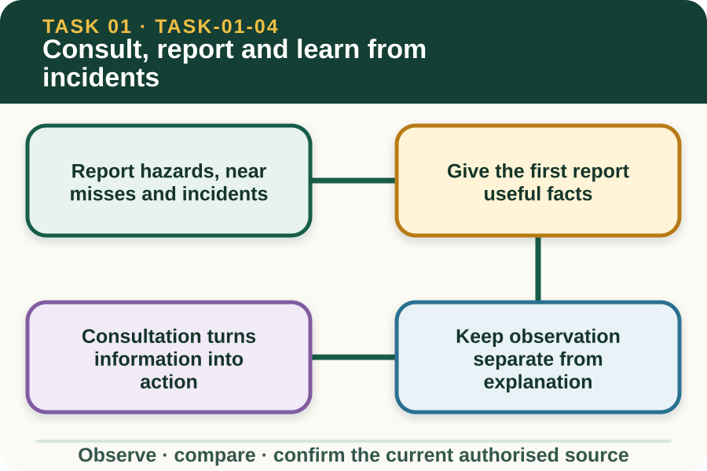

Classroom presentation · 8 slides
Consult, report and learn from incidents
Task 1 · 1 of 8
Consult, report and learn from incidents
Choose the correct reporting path and use incident information to improve the next task.

Speaker notes
Teaching move (web-deck purpose): Use the module visual and the fictional worked example to move students from observation to a source-led decision. Ask students to name the evidence, the authority gap and the next safe communication step. Misconception and help: Focus on what the event reveals about exposure and control reliability. No injury does not mean no learning. Applied action: Rehearse a near-miss brief. Use a fictional teacher-nominated event. Prepare a 30-second factual verbal brief and a five-field written note. Do not enter real names, medical details or local emergency instructions. Boundary: This supplementary learning draws on mapped AHCWHS202 concepts. Current signed TAS and RTO documents control cohort delivery, assessment and competency decisions; current workplace procedures, supervision and authorised sources control real work. [Sources] - Source basis: AHCWHS202 Release 1 and SafeWork NSW farm-safety guidance on reporting hazards, incidents and near misses, consultation, record keeping and reviewing controls. The current workplace process controls emergency, investigation and notification actions. - Visual visual-task-01-04: Generated locally from accepted Stage 05 module headings; no external image copied. - Course visual manifest: work/pi/visuals/visual-manifest.json
Task 1 · 2 of 8
Map the learning
- Report hazards, near misses and incidents
- Give the first report useful facts
- Keep observation separate from explanation
Retrieve: A crate falls beside a worker but causes no injury. Why should it still be reported?
Speaker notes
Teaching move (learning map): Use the module visual and the fictional worked example to move students from observation to a source-led decision. Ask students to name the evidence, the authority gap and the next safe communication step. Misconception and help: Focus on what the event reveals about exposure and control reliability. No injury does not mean no learning. Applied action: Rehearse a near-miss brief. Use a fictional teacher-nominated event. Prepare a 30-second factual verbal brief and a five-field written note. Do not enter real names, medical details or local emergency instructions. Boundary: This supplementary learning draws on mapped AHCWHS202 concepts. Current signed TAS and RTO documents control cohort delivery, assessment and competency decisions; current workplace procedures, supervision and authorised sources control real work. [Sources] - Source basis: AHCWHS202 Release 1 and SafeWork NSW farm-safety guidance on reporting hazards, incidents and near misses, consultation, record keeping and reviewing controls. The current workplace process controls emergency, investigation and notification actions. - Visual visual-task-01-04: Generated locally from accepted Stage 05 module headings; no external image copied. - Course visual manifest: work/pi/visuals/visual-manifest.json
Task 1 · 3 of 8
Notice the evidence
Report hazards, near misses and incidents
A hazard is a potential source of harm, a near miss is an event that could have caused harm, and an incident is an event that caused or had the potential to cause harm or loss. Workplaces may define and record these terms through their current procedures.
Learners should know who receives a report and which communication channel applies before work starts. The website cannot provide a farm's emergency contacts or sequence, so those details must come from induction and current local instructions.
Give the first report useful facts
A first report should be prompt, concise and factual. Include the location, time, what was observed, who or what may be affected and any action already directed by an authorised person.
Do not delay a report while trying to write a perfect explanation. Use the current workplace channel first, then complete any required record accurately and legibly.
Speaker notes
Teaching move (theory idea 1): Use the module visual and the fictional worked example to move students from observation to a source-led decision. Ask students to name the evidence, the authority gap and the next safe communication step. Misconception and help: Focus on what the event reveals about exposure and control reliability. No injury does not mean no learning. Applied action: Rehearse a near-miss brief. Use a fictional teacher-nominated event. Prepare a 30-second factual verbal brief and a five-field written note. Do not enter real names, medical details or local emergency instructions. Boundary: This supplementary learning draws on mapped AHCWHS202 concepts. Current signed TAS and RTO documents control cohort delivery, assessment and competency decisions; current workplace procedures, supervision and authorised sources control real work. [Sources] - Source basis: AHCWHS202 Release 1 and SafeWork NSW farm-safety guidance on reporting hazards, incidents and near misses, consultation, record keeping and reviewing controls. The current workplace process controls emergency, investigation and notification actions. - Visual visual-task-01-04: Generated locally from accepted Stage 05 module headings; no external image copied. - Course visual manifest: work/pi/visuals/visual-manifest.json
Task 1 · 4 of 8
Use the source boundary
Keep observation separate from explanation
Observation records what the learner directly saw, heard or measured. Explanation considers why it may have happened, but cause should not be presented as fact until evidence has been reviewed.
For example, 'the gate was open when the team arrived' is an observation. 'A worker left it open because they were rushing' is an assumption unless the writer directly observed and can accurately report that event.
Consultation turns information into action
Consultation after a near miss gives people a chance to compare observations, identify missing information and consider whether existing controls remain suitable. The goal is prevention and learning, not public blame.
A learner can contribute a clear account, ask what has changed and apply the confirmed outcome. Decisions about investigation, notification and corrective action stay with the authorised workplace roles and legal process.
Speaker notes
Teaching move (theory idea 2): Use the module visual and the fictional worked example to move students from observation to a source-led decision. Ask students to name the evidence, the authority gap and the next safe communication step. Misconception and help: Focus on what the event reveals about exposure and control reliability. No injury does not mean no learning. Applied action: Rehearse a near-miss brief. Use a fictional teacher-nominated event. Prepare a 30-second factual verbal brief and a five-field written note. Do not enter real names, medical details or local emergency instructions. Boundary: This supplementary learning draws on mapped AHCWHS202 concepts. Current signed TAS and RTO documents control cohort delivery, assessment and competency decisions; current workplace procedures, supervision and authorised sources control real work. [Sources] - Source basis: AHCWHS202 Release 1 and SafeWork NSW farm-safety guidance on reporting hazards, incidents and near misses, consultation, record keeping and reviewing controls. The current workplace process controls emergency, investigation and notification actions. - Visual visual-task-01-04: Generated locally from accepted Stage 05 module headings; no external image copied. - Course visual manifest: work/pi/visuals/visual-manifest.json
Task 1 · 5 of 8
Connect evidence to action
Review whether the control worked
Corrective action is useful only if it changes the risk in practice. A review looks for observable evidence that the agreed control is present, understood and effective under the next task conditions.
If the same hazard returns, a new condition appears or the control is not being followed, report it again. A previous record is not proof that the issue has been solved.
Use records ethically
Incident information may include personal, health or workplace details. Use the authorised record system, include only relevant facts and share information only with people who have a legitimate role in the process.
Practice scenarios on this site are fictional and privacy-safe. They help learners rehearse clear reporting, but they are not a place to enter names, real injury details, confidential property information or assessor decisions.
Speaker notes
Teaching move (theory idea 3): Use the module visual and the fictional worked example to move students from observation to a source-led decision. Ask students to name the evidence, the authority gap and the next safe communication step. Misconception and help: Focus on what the event reveals about exposure and control reliability. No injury does not mean no learning. Applied action: Rehearse a near-miss brief. Use a fictional teacher-nominated event. Prepare a 30-second factual verbal brief and a five-field written note. Do not enter real names, medical details or local emergency instructions. Boundary: This supplementary learning draws on mapped AHCWHS202 concepts. Current signed TAS and RTO documents control cohort delivery, assessment and competency decisions; current workplace procedures, supervision and authorised sources control real work. [Sources] - Source basis: AHCWHS202 Release 1 and SafeWork NSW farm-safety guidance on reporting hazards, incidents and near misses, consultation, record keeping and reviewing controls. The current workplace process controls emergency, investigation and notification actions. - Visual visual-task-01-04: Generated locally from accepted Stage 05 module headings; no external image copied. - Course visual manifest: work/pi/visuals/visual-manifest.json
Task 1 · 6 of 8
Retrieve and check
A crate falls beside a worker but causes no injury. Why should it still be reported?
- It may reveal a failed control and an exposure that could cause harm next time.
- Every report automatically proves someone broke a rule.
- Only because the website requires a saved response.
Teacher reveal
Correct. Near-miss information can support prevention before harm occurs.
No injury does not mean no learning.
Speaker notes
Teaching move (retrieval): Use the module visual and the fictional worked example to move students from observation to a source-led decision. Ask students to name the evidence, the authority gap and the next safe communication step. Misconception and help: Focus on what the event reveals about exposure and control reliability. No injury does not mean no learning. Applied action: Rehearse a near-miss brief. Use a fictional teacher-nominated event. Prepare a 30-second factual verbal brief and a five-field written note. Do not enter real names, medical details or local emergency instructions. Boundary: This supplementary learning draws on mapped AHCWHS202 concepts. Current signed TAS and RTO documents control cohort delivery, assessment and competency decisions; current workplace procedures, supervision and authorised sources control real work. [Sources] - Source basis: AHCWHS202 Release 1 and SafeWork NSW farm-safety guidance on reporting hazards, incidents and near misses, consultation, record keeping and reviewing controls. The current workplace process controls emergency, investigation and notification actions. - Visual visual-task-01-04: Generated locally from accepted Stage 05 module headings; no external image copied. - Course visual manifest: work/pi/visuals/visual-manifest.json Use option-specific feedback after the learner commits to an answer.
Task 1 · 7 of 8
Construct a source-led response
Write a concise first report for a fictional near miss, then explain one question a supervisor might investigate and one sign that a control is working.
- At [fictional time and place], I observed…
- The possible exposure was…
- I reported this to… through…
- A question for authorised review is…
- Evidence that the control is working would be…
Success criteria
- Uses factual and privacy-safe language
- Separates observation from possible cause
- Shows the correct reporting boundary
- Includes a measurable review point without claiming competence
Speaker notes
Teaching move (guided written response): Use the module visual and the fictional worked example to move students from observation to a source-led decision. Ask students to name the evidence, the authority gap and the next safe communication step. Misconception and help: Focus on what the event reveals about exposure and control reliability. No injury does not mean no learning. Applied action: Rehearse a near-miss brief. Use a fictional teacher-nominated event. Prepare a 30-second factual verbal brief and a five-field written note. Do not enter real names, medical details or local emergency instructions. Boundary: This supplementary learning draws on mapped AHCWHS202 concepts. Current signed TAS and RTO documents control cohort delivery, assessment and competency decisions; current workplace procedures, supervision and authorised sources control real work. [Sources] - Source basis: AHCWHS202 Release 1 and SafeWork NSW farm-safety guidance on reporting hazards, incidents and near misses, consultation, record keeping and reviewing controls. The current workplace process controls emergency, investigation and notification actions. - Visual visual-task-01-04: Generated locally from accepted Stage 05 module headings; no external image copied. - Course visual manifest: work/pi/visuals/visual-manifest.json
Task 1 · 8 of 8
Close the loop
Rehearse a near-miss brief
Use a fictional teacher-nominated event. Prepare a 30-second factual verbal brief and a five-field written note. Do not enter real names, medical details or local emergency instructions.
- Name the strongest evidence in the scenario.
- Explain the decision or referral it supports.
- State which current source or authorised person controls real work.
Boundary: This supplementary learning draws on mapped AHCWHS202 concepts. Current signed TAS and RTO documents control cohort delivery, assessment and competency decisions; current workplace procedures, supervision and authorised sources control real work.
Speaker notes
Teaching move (exit and application): Use the module visual and the fictional worked example to move students from observation to a source-led decision. Ask students to name the evidence, the authority gap and the next safe communication step. Misconception and help: Focus on what the event reveals about exposure and control reliability. No injury does not mean no learning. Applied action: Rehearse a near-miss brief. Use a fictional teacher-nominated event. Prepare a 30-second factual verbal brief and a five-field written note. Do not enter real names, medical details or local emergency instructions. Boundary: This supplementary learning draws on mapped AHCWHS202 concepts. Current signed TAS and RTO documents control cohort delivery, assessment and competency decisions; current workplace procedures, supervision and authorised sources control real work. [Sources] - Source basis: AHCWHS202 Release 1 and SafeWork NSW farm-safety guidance on reporting hazards, incidents and near misses, consultation, record keeping and reviewing controls. The current workplace process controls emergency, investigation and notification actions. - Visual visual-task-01-04: Generated locally from accepted Stage 05 module headings; no external image copied. - Course visual manifest: work/pi/visuals/visual-manifest.json